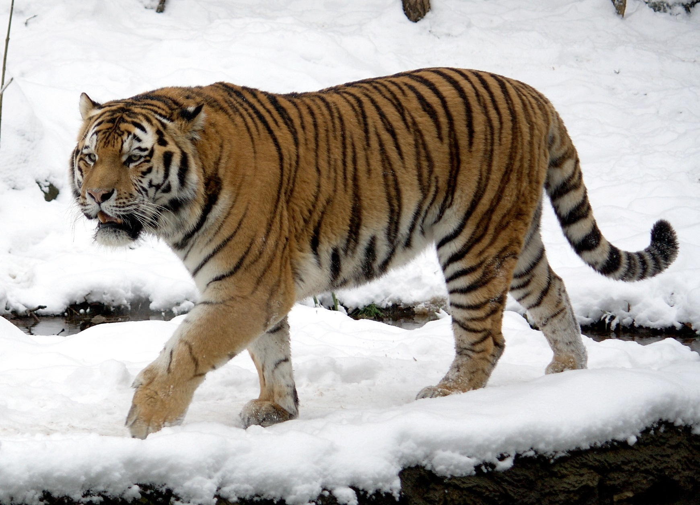
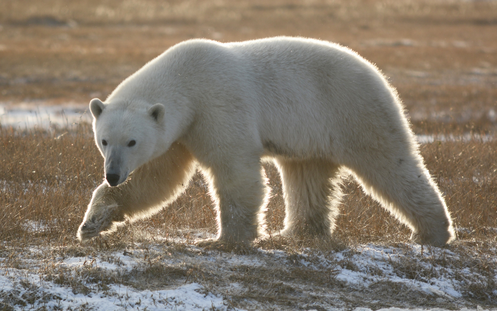
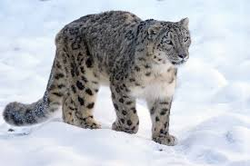

Амурский тигр

Это самый крупный тигр в мире, который живет на Дальнем Востоке России. Из-за охоты и сильной вырубки лесов этих красивых и сильных диких кошек осталось очень мало в дикой природе.
подробнееБелый медведь

Самый большой сухопутный хищник на планете. Он живет на Крайнем Севере среди льдов и охотится на рыбу. Белые медведи страдают из-за таяния ледников и загрязнения океана.
подробнееСнежный барс
